About Me
I am a Computer Science undergraduate majoring in Multimedia Computing at Universiti Teknologi MARA (UiTM) Shah Alam. With a strong foundation in software engineering and a passion for interactive media, I specialize in web and mobile application development, game design, and fundamental machine learning implementations. I thrive on solving complex logic problems and collaborating in dynamic team environments.
Technical Skills
Languages
C++, Java, Python, C#, HTML, CSS, JavaScript
Tools & Engines
Unity, Android Studio, Construct 2, Blender, NetBeans (JSP), VS Code, Visual Studio, Star UML, BlueJ, Dev-C++
Design & Multimedia
Adobe Premiere Pro, Adobe Animate
Languages Spoken
Malay (Native), English (Intermediate), Japanese (Basic)
Featured Projects
MY-Kuih Application: Real-Time Kuih Recognition for Recipe Retrieval
An interactive, mobile-responsive intelligent multimedia application designed to preserve Malaysian culinary heritage. Features an image classification core allowing users to scan traditional delicacies to receive automated database details.
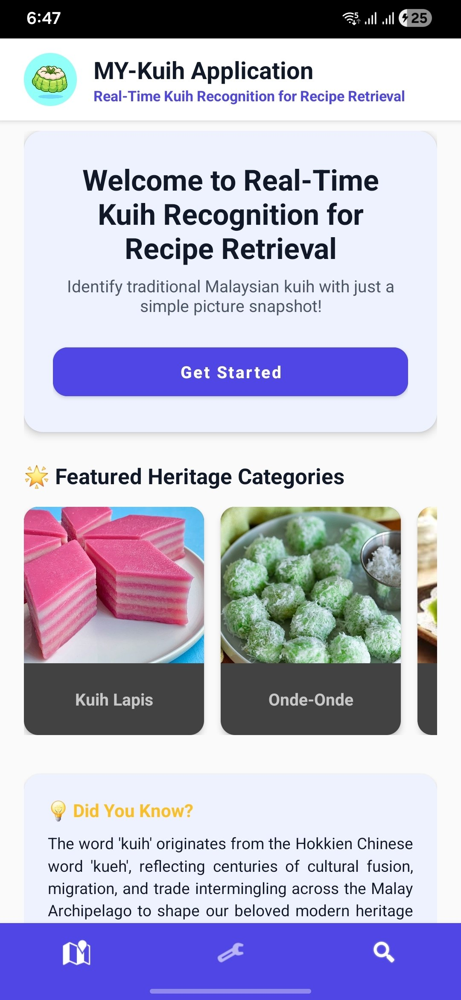
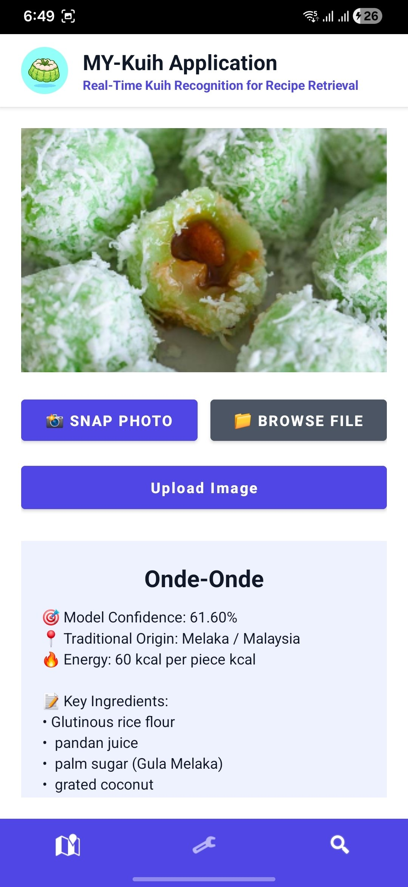
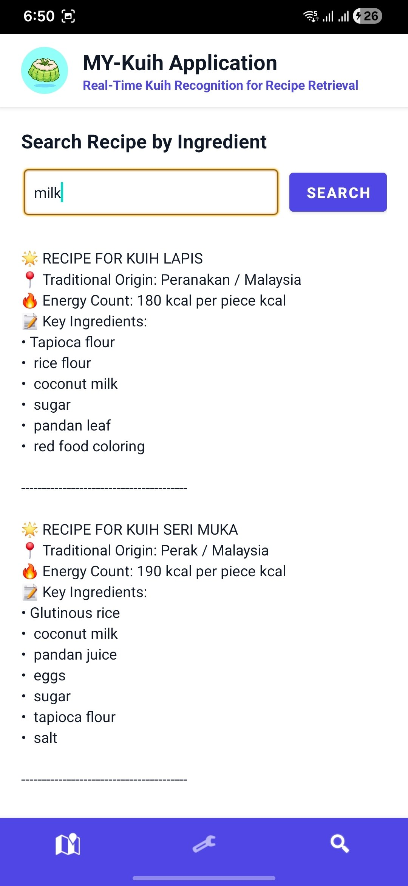
- Computer Vision Core: Integrates a custom CNN-based image recognition model displaying real-time classification confidence percentages.
- Heritage Analytics: Provides cultural insight data breakdowns, identifying historical regional origins (e.g., Melaka, Peranakan, Perak).
- Nutritional & Recipe Tracking: Computes serving-size calorie counts (kcal) alongside dynamically populated core ingredient checklists.
- Reverse Recipe Search Engine: Includes a query filter mechanism allowing users to search and parse out full recipe configurations based exclusively on an ingredient query input.
Discount & Coupon Management Portal
An enterprise-level web portal built to simplify promotional campaign creation and tracking. Features a centralized manager dashboard displaying live data aggregates, a conditional active coupon record register, and localized promotional configurations.
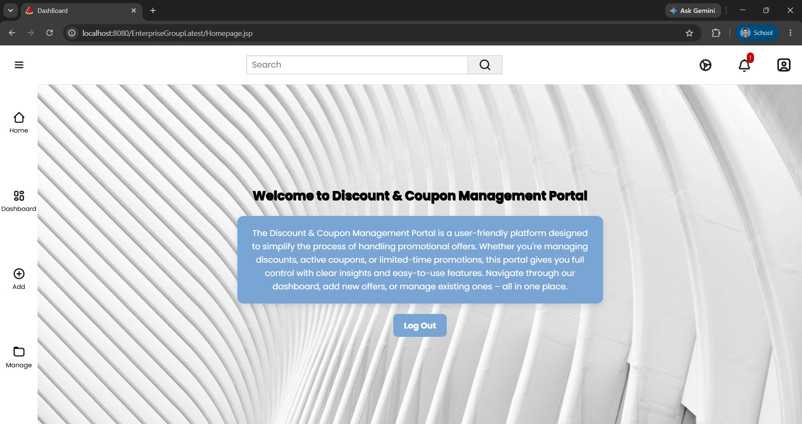
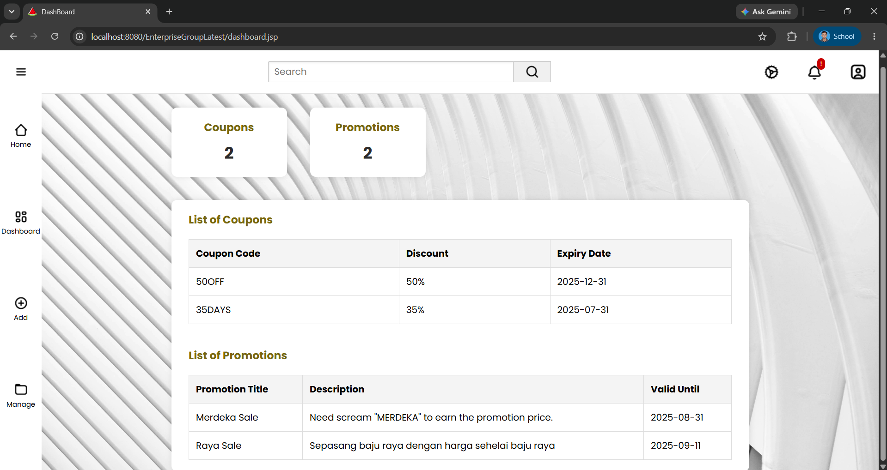
- Designed a multi-pane interface separating campaign overview metrics from database records.
- Implemented robust server-side processing for managing dynamic discount codes, custom percentage reductions, and expiration validations.
LogicGates Hero
An educational interactive learning game designed to alleviate friction points in digital logic pedagogy. Features split-pane workspaces where users configure hardware gates to solve objective-driven circuit puzzles in real time.
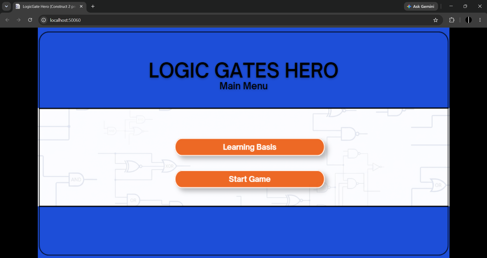
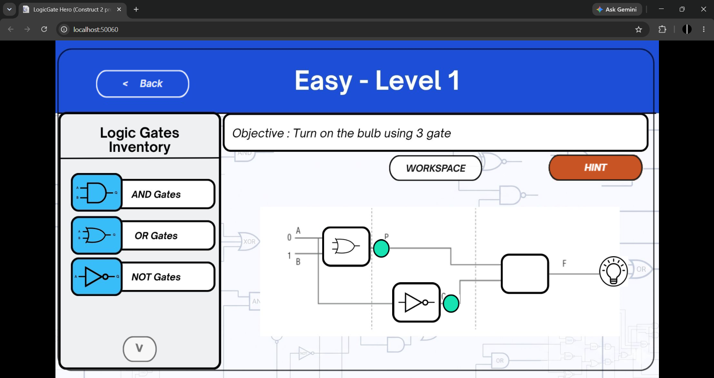
- Built an interactive drag-and-drop inventory system supporting active logical components (AND, OR, NOT Gates).
- Programmed dynamic signal-line evaluations tracking binary state pathways down to reactive endpoint lightbulb triggers.
Knight Defender
A stylized, fast-paced 2D lane defense action game demanding quick positioning reflexes. Players maneuver a knight avatar across vertical tracks to intercept advancing enemy waves before they compromise the kingdom boundaries.
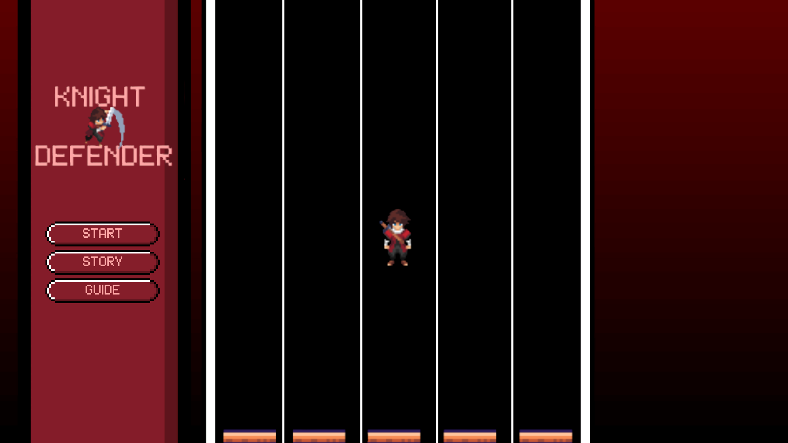
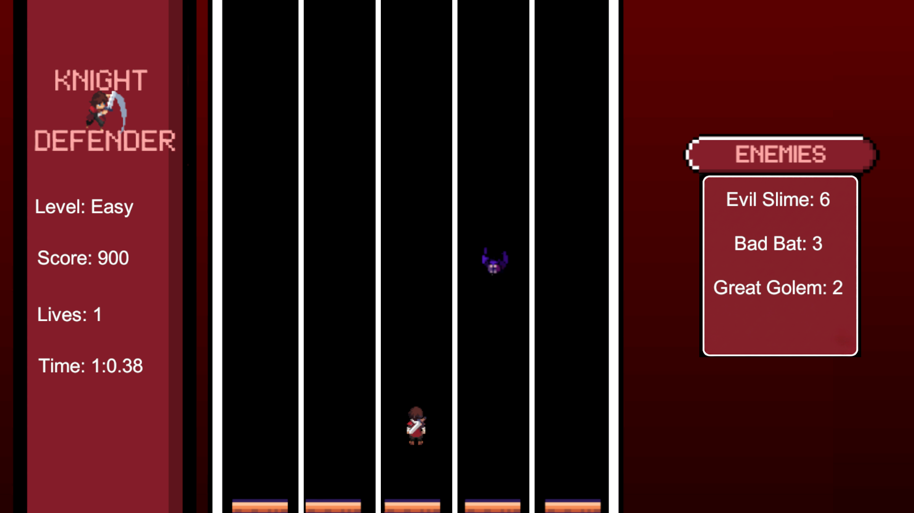
- Programmed a dynamic tracking system monitoring level difficulty scaling, active timers, and live remaining counts.
- Engineered custom sprite variant spawning behaviors for distinct enemy classes including Evil Slimes, Bad Bats, and Great Golems.
EcoReConnect Website
A polished, environmental awareness portal structured to connect communities with ecology initiatives. Features modern CSS carousel banners highlighting mental health insights from nature, alongside built-in interactive engagement layers.
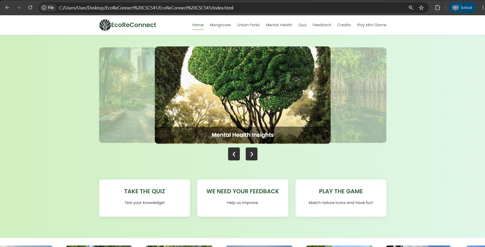
- Constructed a user-friendly navigation layout incorporating educational modules (Mangroves, Urban Parks).
- Embedded lightweight gamified front-end elements including a responsive ecology trivia quiz and an icon-matching mini-game.
3D Playground Animation (Computer Graphics)
A comprehensive 3D landscape prototyping project simulating a vibrant playground environment. Focuses heavily on strict geometric transformations, lighting configurations, and multi-asset keyframe animation.
- Modeled, textured, and laid out interactive environmental components including slides, a wind turbine mill, swings, a see-saw, and rotating carousels.
- Configured complex animation paths, parent-child spatial hierarchies, and camera tracking sweeps to produce a cohesive environment render.
Escape From FSKM
A high-energy, narrative-driven 2D endless runner set inside the stylized school hallways of the FSKM faculty building at UiTM Shah Alam. Players avoid chasing obstacles while pacing down dynamically scaling corridors.
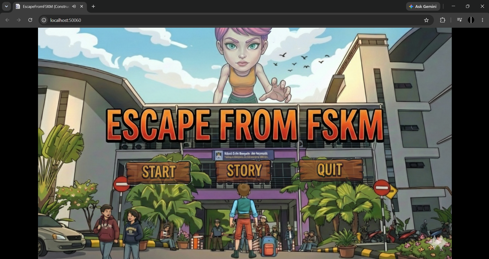
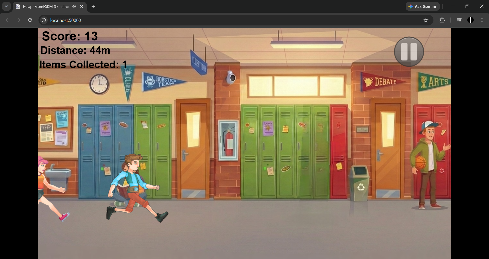
- Designed detailed parallax backdrops mirroring actual institutional hallway environments (lockers, posters, water coolers).
- Programmed UI counters to seamlessly calculate real-time running scores, distance metrics (m), and pickup collection items.
Education & Certifications
Bachelor of Computer Science (Hons.) Multimedia Computing
Universiti Teknologi MARA (UiTM) Shah Alam | Oct 2023 - Present
Current CGPA: 3.37
Certificate of Matriculation Programme (Physical Science)
Kolej Matrikulasi Pulau Pinang | July 2021 - May 2023
CGPA: 3.46
Certifications & Engagement
• MY5G Ericsson Malaysia Pioneers Programme (Jan 2026)
• Active Member, Multimedia Computing Society Club (Oct 2023 - Present)